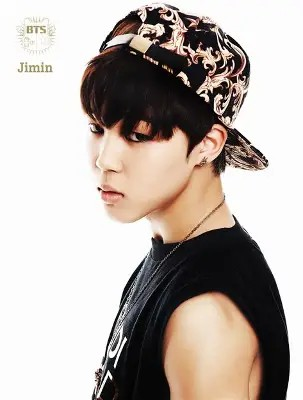
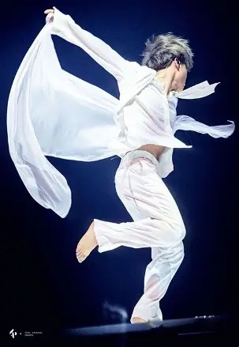
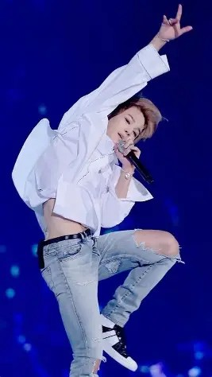
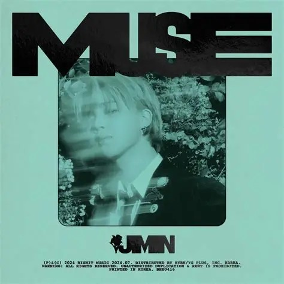

Introduction
Park Jimin, known mononymously as Jimin, was born on October 13, 1995, in Busan, South Korea. He is a singer, dancer, and songwriter. Best known as a member of the globally renowned boy band BTS (Bangtan Sonyeondan), which debuted in 2013 under Big Hit Entertainment (now HYBE Corporation). Jimin is known for his exceptional dance skills, captivating stage presence, and powerful vocals. studied contemporary dance at Busan High School of Arts before joining Big Hit Entertainment. His dance background became an important foundation for his performance style, particularly his expressive movements and fluid choreography. He has contributed to BTS's success with his performances and has also released solo tracks that showcase his unique artistry.
Jimin studied contemporary dance at Busan High School of Arts before joining Big Hit Entertainment. As a vocalist and dancer of BTS, he brings emotional depth and artistic versatility to the group's music, while his solo work, including FACE and MUSE, showcases his personal experiences, musical evolution and individuality as an artist. His dance background became an important foundation for his performance style, particularly his expressive movements and fluid choreography. He is also a recipient of the Hwagwan Order of Cultural Merit and has served as Special Presidential Envoy for Future Generations and Culture. Jimin's influence extends beyond music, as he is admired for his philanthropy, fashion sense, and positive impact on fans worldwide.
Early Life & Dance Training
Park Jimin was born on October 13, 1995, in Geumjeong District, Busan, South Korea. He attended Hodong Elementary School and Yonsan Middle School before pursuing his passion for dance more seriously. During middle school, Jimin enrolled at Just Dance Academy, where he studied different dance styles and developed his understanding of movement, rhythm, and performance.
He later attended Busan High School of Arts, majoring in Modern Dance, where he distinguished himself as one of the outstanding students in his department. His contemporary dance training gave him a strong foundation in flexibility, balance, body control, and emotional expression. Recognizing his potential, one of his dance teachers encouraged him to audition for an entertainment company.
Big Hit Audition & Trainee Years

In 2012, Jimin successfully auditioned for Big Hit Entertainment and moved to Seoul to pursue a career in music. Following his acceptance, he transferred to Korean Arts High School, where he continued his education alongside his idol training.
Unlike several of the other members, Jimin entered the company with an extensive background in contemporary dance but little formal idol vocal training. He therefore had to adapt his existing dance technique to BTS's hip-hop-oriented choreography while simultaneously developing his singing abilities.
His trainee period was particularly demanding. Jimin became known for his relentless practice habits, frequently spending long hours rehearsing after school and sometimes sleeping in the practice room before returning to school the following morning. His determination to improve both his dancing and vocals became a defining part of his early development.
Despite joining BTS relatively late, Jimin quickly demonstrated his ability to adapt. His position in the final lineup was not confirmed until shortly before debut, making his eventual inclusion particularly significant. He ultimately became the seventh and final member of BTS.
Trainee Timeline
- 2012: Auditions for Big Hit and moves to Seoul
- 2012: Transfers to Korean Arts High School
- June 4, 2013: Introduced as a BTS member
- June 13, 2013: BTS debuts with 2 COOL 4 SKOOL
Debut & Establishing His Position in BTS
Official Debut: June 2013
Jimin was officially introduced as a BTS member on June 4, 2013, as the group's Main Dancer and Lead Vocalist. His introduction included a showcase highlighting his dance abilities, providing an early glimpse of the performance artistry he would bring to the group.
He officially debuted with BTS on June 13, 2013, through the single album 2 COOL 4 SKOOL and its title track, No More Dream. Having joined the final lineup only months before debut, Jimin faced the challenge of catching up with members who had undergone considerably longer periods of training.
Debut Performances & Musical Contributions
Jimin's debut performances immediately highlighted the combination of technical precision and expressive movement that distinguished his dancing. His contemporary dance background complemented BTS's early hip-hop choreography, allowing him to incorporate fluid transitions, controlled movements, and powerful extensions into the group's performances. In No More Dream and We Are Bulletproof Pt.2, Jimin frequently appeared in prominent choreography formations, contributing to the visual impact of BTS's debut stages.
His performance in No More Dream, particularly its memorable choreography and signature shirt-lifting moment, also became an early talking point among fans. Beyond dancing, Jimin began establishing his identity as a vocalist. His distinctive higher-register tone, melodic phrasing, and emotional delivery provided contrast to the group's rap-heavy debut sound. Tracks such as I Like It and We Are Bulletproof Pt.2 offered early examples of his developing vocal contributions.
Developing as a Performer
Jimin's early years in BTS were marked by continuous improvement. Although he initially struggled with adapting contemporary dance techniques to idol choreography, he became increasingly confident in executing demanding routines while maintaining expressive stage presence. His ability to combine technical dance ability with emotional interpretation helped establish him as one of BTS's most distinctive performers.
Jimin's Unique Contributions to BTS

Main Dancer
- Contemporary Dance Influence: Jimin incorporates elements of modern and contemporary dance into BTS's choreography, adding fluidity, elegance, and emotional depth to performances.
- Technical Precision: His exceptional flexibility, balance, body control , and ability to execute demanding movements contribute to the group's choreography and synchronization.
- Expressive Interpretation: Rather than simply executing choreography, Jimin frequently communicates the emotional meaning of a song through movement, facial expressions, and body language.
- Performance Versatility: He adapts easily between powerful, sharp choreography and softer, more graceful movements, allowing him to contribute to BTS's wide range of musical concepts.
Examples: Black Swan, Lie, I Need U
Lead Vocalist
- Distinctive Vocal Color: Jimin's higher-register, airy yet powerful vocal tone provides a recognizable contrast to the other vocalists and contributes to BTS's harmonic diversity.
- Emotional Delivery: His vocal performances frequently emphasize vulnerability, longing, tenderness, and emotional intensity, particularly in ballads and melodic sections.
- Vocal Highlights: Jimin often delivers climactic high notes, harmonies, and expressive ad-libs, helping elevate the emotional impact of BTS songs.
- Musical Versatility: His ability to move between falsetto, softer melodic passages, and more powerful vocal delivery allows him to adapt to different musical styles.
Examples: Spring Day, Serendipity, Blood Sweat & Tears

Stage Presence & Artistic Identity
- Emotional Connection: Jimin's expressive eye contact, gestures, and performance interpretation help create an intimate connection between BTS and their audiences.
- Visual Storytelling: His dance and stage performances often communicate a narrative or emotional progression, particularly in songs exploring vulnerability, identity, and personal struggles.
- Artistic Influence: His background in contemporary dance contributes an artistic dimension to BTS's performance style, complementing the group's more powerful hip-hop and street-dance influences.
Examples: Filter, Black Swan, Set Me Free Pt.2
Education, Solo Career & Recognition
Education
Jimin graduated from Global Cyber University with a degree in Broadcasting and Entertainment. He subsequently enrolled at Hanyang Cyber University, where he pursued a Master of Business Administration program in Advertising and Media alongside the other BTS members.
Solo Career & Achievements
Jimin's solo career has expanded his artistic identity beyond his work with BTS, allowing him to explore personal themes, musical experimentation, and individual expression.
Solo Milestones
- March 24, 2023: Releases his debut solo album, FACE
- April 8, 2023: Like Crazy debuts at No. 1 on the Billboard Hot 100
- August 24, 2023: FACE passes one billion Spotify streams
- July 19, 2024: Releases his second album, MUSE
- September 5, 2024: MUSE passes one billion Spotify streams
FACE
Released: March 24, 2023
His debut solo album, exploring themes of self-reflection, emotional struggles, and personal transformation. Its title track, Like Crazy, made history when it debuted at No. 1 on the Billboard Hot 100, making Jimin the first South Korean solo artist to achieve this milestone.
Notable tracks: Like Crazy, Alone, Set Me Free Pt.2

MUSE
Released: July 19, 2024
As his subsequent album, which further explored love, emotional connection, and artistic growth, MUSE surpassed one billion Spotify streams two months after its release, making Jimin the first K-pop soloist to achieve this milestone with multiple albums.
Notable tracks: Be Mine, Who, Slow Dance (featuring Sofia Carson)
Both FACE and MUSE surpassed one billion Spotify streams, making Jimin the first K-pop soloist to achieve this milestone with multiple albums.
Cultural Recognition
Beyond his musical accomplishments, Jimin has received recognition for his artistic contributions and cultural influence. In 2019, he received a plaque of appreciation from the Preservation Association of Buchaechum for his performance of traditional Korean fan dance at the 2018 Melon Music Awards.
His work has also contributed to the international visibility of Korean music and performance, with his contemporary dance background bringing a distinctive artistic dimension to both BTS's performances and his solo work.
"I hope that you never give up. Remember there is a person in Korea, in the city of Seoul that understands you."
— Park Jimin
TMI
- Jimin is BTS's angel (literally)
- He has some type of beef with chairs...(he can never seem to sit on them and not trip or fall)
- He's Run BTS' worst foe.. an evil genius if you will
- He is often referrd to as "K-pop's Androgynous King"
- Almost everything he says is meme worthy
- He's the shortest member of BTS (Jk never lets him live it down)
- He's the most flexible member of BTS
- He's a savage baddie
- His animal character is a Dog
Made with love for BTS and ARMY